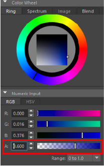

颜色选择器是 Maya 中用于管理颜色的常用工具。
打开颜色选择器
- 在 Maya 界面中的任意位置双击色样
全色选择器窗口：A.“颜色历史”(Color History)区域，B.“颜色控制盘”(Color Wheel)，C.“数值输入”(Numeric Input)区域以及 D.“调色板”(Color Palettes)。
颜色历史
“颜色历史”(Color History)区域显示当前选定的颜色，并提供快速拾取和重新拾取场景中的现有颜色的方式。
- 当前颜色/上一个颜色
-
可将“颜色历史”(Color History)中的大彩色框分割为两个区域。上方区域显示当前选择的颜色，而下方区域显示先前选择的颜色。
- 滴管
-
使用“滴管”(Eyedropper)工具从任意屏幕像素中选择一种颜色，然后将其应用到场景中的对象。单击“滴管”(Eyedropper)图标
 ，然后单击“颜色选择器”(Color Chooser)中的任意位置，以更改当前所选的颜色。
，然后单击“颜色选择器”(Color Chooser)中的任意位置，以更改当前所选的颜色。
光标下面的样例表示当前颜色采样，以及之前所选的颜色。
按住 Esc 键并滚动鼠标滚轮，或在工具之间进行切换（无需单击，例如，按 Alt + Tab），即可退出“滴管”(Eyedropper)工具。
- 永久调色板
-
通过在“颜色历史”(Color History)中单击调色板选择任何基本颜色和着色。该调色板将始终包含相同的颜色。
- 历史
-
随着不断地在对象上设定颜色，会将这些颜色添加到历史中，这样可以在将来重新选择它们。
颜色控制盘
颜色控制盘提供了多种选择颜色的方式。
环形
- 围绕外环拖动光标来更改显示在中心框中的颜色。
- 从框中选择颜色的着色。
也可在精简的“颜色选择器”(Color Chooser)中执行该操作。
光谱
- 围绕光谱场拖动光标以选择颜色。
- 拖动底部的滑块以调整着色。
图像
使用“图像”(Image)选项卡可以直接从图像中对颜色采样。
- 通过下列任一方法，将图像加载到框中：
- 将图像从浏览器拖动到框中。
- 单击加载按钮并从文件浏览器导航到图像
- 在已加载图像上拖动鼠标，以放大其特定区域。
- 释放鼠标按钮以设定光标下方的当前颜色。
混合(Blend)
使用“融合”(Blend)选项卡可以将四种颜色融合到一起，并在它们之间选择任何着色。
- 将任何颜色从“调色板”(Color Palettes)拖动到其中一个角点来更改要融合的颜色。
- 通过在区域中单击某种颜色来选择它。
数值输入
数值颜色值是使用“数值输入”(Numeric Input)区域输入的，方法为：
- 将值键入到值字段中
- 拖动各自的滑块。
可以在“RGB”或“HSV”颜色模型中调整颜色。
- Alpha 通道
- Maya 界面颜色设置(Color Settings)中的某些元素支持 Alpha 通道，从而影响颜色不透明度。如果 Alpha 通道可用，则它在“数值输入”(Numeric Input)RGB 或 HSV 颜色模型中显示为带有 A 的通道。

带 Alpha 通道的颜色选择器
- 若要查看 Alpha 通道中可用的元素颜色，请参见颜色设置(Color Settings)主题的“活动和非活动”(Active and Inactive )部分中的设置线框透明度(Set wireframe transparency)。
- 混合颜色空间(Mixing Color Space)
- 使用数值控件和滑块指定设置值的颜色空间。
- “渲染空间”(Rendering Space)可用于直接在“颜色管理”(Color Management)首选项中指定的渲染空间(Rendering Space)中设置值。
- “显示空间”(Display Space)可用于输入相对于用于显示的颜色空间的值。选择此选项时，与首选项中指定的“视图变换”(View Transform)相反的情况将应用于您输入的值，以便将它们转化为渲染空间，并在内部存储生成的值。这样提供的颜色值与应用视图变换后为显示输入的相同。如果您知道所需的最终值单位（例如 sRGB），则这一点非常有用。
- 颜色管理
- 将视图变换应用于颜色选择器(Color Chooser)中的控件。禁用此选项时，使用数值控件和滑块输入的任何值都假定为在渲染空间中。
注： 在“颜色控制盘”(Color Wheel)上，仅“环形”(Ring)选项卡已管理颜色。
调色板
使用“调色板”(Color Palette)可以在每个调色板上最多存储 256 种颜色。使用“调色板”可以：
- 随时通过单击从调色板中选择颜色。
- 通过按住鼠标中键并拖动调色板颜色，将该颜色从一个位置移动到另一个位置。
- 通过在调色板中的某个位置上单击鼠标右键存储当前颜色。
- 通过下拉菜单在多个调色板之间进行选择。
- 通过单击“加载”(Load)和“保存”(Save)按钮，加载现有调色板或保存调色板。